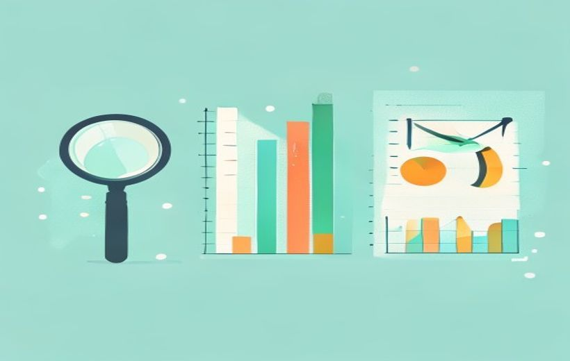

De todo el Tema 2, lo que de verdad entra en el examen es el punto 2.5: la evaluación de resultados — comprobar si el estudio cumplió sus objetivos, medirlo con indicadores y aprender de él. El resto del tema lo tienes resumido como contexto.
La evaluación de resultados es la fase en la que el equipo se pregunta: «¿valió la pena el estudio y qué aprendemos para la próxima vez?».
De este tema, lo que cae es la evaluación de resultados (2.5): analizar si el estudio cumplió los objetivos planteados y si la información sirve para tomar decisiones, midiéndolo con cuatro dimensiones (metodológica, operativa, financiera y estratégica) y cerrando con un documento de retroalimentación para mejorar el siguiente proyecto.
🧠 Los conceptos
Las tarjetas con la insignia CAE son las de 2.5 — el núcleo del examen. La última es un repaso rápido del resto del Tema 2 (contexto, sin insignia). Despliega cada una, léela con calma y márcala como entendida.
Qué es y para qué sirve
La evaluación de resultados es la etapa en la que se analiza si el estudio ha cumplido los objetivos planteados y si la información obtenida es útil para tomar decisiones estratégicas. No se limita a valorar el informe final: es una revisión integral de todo el proyecto para determinar su eficacia, eficiencia y pertinencia.

Una evaluación bien hecha permite tres cosas: confirmar la validez de las conclusiones, detectar limitaciones y extraer aprendizajes que mejoren futuras investigaciones.
Contrastar resultados con los objetivos
El primer paso de la evaluación es contrastar los resultados obtenidos con los objetivos definidos en la planificación. Es decir: volver a la pregunta inicial y comprobar si la hemos respondido.
Para ello hay que revisar:
Las 4 dimensiones (Tabla 6)
La evaluación se mide con indicadores agrupados en cuatro dimensiones. Esta es la tabla que más probabilidad tiene de caer en el examen — apréndela de memoria.
| Dimensión | Indicador | Ejemplo práctico |
|---|---|---|
| Metodológica | Tasa de respuesta | % de encuestas válidas en un estudio online |
| Operativa | Cumplimiento de plazos | Entrega del informe en la fecha prevista |
| Financiera | Desviación presupuestaria | Diferencia entre coste real y coste estimado |
| Estrategia | Impacto en decisiones | Nº de decisiones estratégicas tomadas a partir del estudio |
Tabla 6. Indicadores clave para la evaluación de resultados (ESIC, pág. 19-20).
Evaluación metodológica / operativa / financiera
Cada dimensión se traduce en una revisión concreta. Así explica ESIC en qué consiste cada una:
| Evaluación | ¿Qué revisa? |
|---|---|
| Metodológica | El rigor con que se aplicaron las técnicas: ¿se respetó el diseño de la muestra?, ¿funcionaron bien los instrumentos?, ¿el análisis siguió criterios estadísticos o interpretativos apropiados? (Ej.: comprobar que las encuestas online llegaron al segmento previsto y no a perfiles no representativos.) |
| Operativa | Lo logístico y de gestión: cumplimiento de plazos, coordinación entre equipos, gestión de recursos y reacción ante imprevistos. Detecta ineficiencias aunque no afecten a las conclusiones. (Ej.: la falta de sincronización entre campo y análisis provocó retrasos evitables.) |
| Financiera | Si el estudio se hizo dentro del presupuesto y si el gasto dio un retorno de valor a la empresa. Ese valor no siempre es dinero inmediato: también es más conocimiento del mercado, menos riesgo o mejor posición competitiva. |
Documento de retroalimentación y mejora continua
La evaluación termina generando un documento de retroalimentación que sirve de base para la mejora continua. Este informe no recoge solo las conclusiones del estudio, sino también las lecciones aprendidas sobre el propio proceso de investigación.
Sistematizar esas lecciones permite que los próximos proyectos aprovechen la experiencia acumulada, optimizando metodologías, plazos y gestión de recursos.
El Tema 2 trata muchas cosas, pero en el examen solo cae el 2.5. Aun así, conviene tener una idea del marco donde encaja la evaluación. Aquí lo tienes resumido (no necesitas estudiártelo a fondo).
| Apartado | En una línea |
|---|---|
| Tipos de investigación | Exploratoria (problema nuevo, genera hipótesis) → Descriptiva (mide qué/quién/cuántos) → Causal (demuestra causa-efecto con experimentos). |
| 2.0 Briefing vs Propuesta | Briefing = el cliente explica qué necesita (problema, objetivos, público, plazos, presupuesto). Propuesta = el equipo responde con metodología, fases y cronograma. |
| 2.1 Estructura organizativa | Quién hace qué: director de proyecto + equipo técnico. Modelos: centralizado, descentralizado e híbrido. |
| 2.2 Planificación metodológica | Elegir enfoque, técnicas (cuali/cuanti) y muestra. Ciclo de 6 fases: definir → diseñar → recoger → analizar → informar → retroalimentar. |
| 2.3 Gestión de recursos | Administrar lo humano, financiero, tecnológico y material del proyecto. |
| 2.4 Control y seguimiento | Supervisar que el plan se cumple de forma continua (no solo al final): plan de trabajo, metodología, datos, equipo y presupuesto. |
| 2.6 / 2.7 | Documentar y presentar el informe; integrar los hallazgos en la estrategia de la empresa. |
| Investigación online | Rápida y barata, pero ojo al sesgo de cobertura, el fraude y las tasas de respuesta bajas. |
🃏 Flashcards
Toca cada tarjeta para girarla. Tapa la definición con la mano y comprueba si te la sabes. Casi todas son de 2.5.
✅ Test rápido
6 preguntas tipo examen, centradas en 2.5. Elige una opción y te corrige al momento con la explicación.
⭐ Preguntas del final de la presentación
Preguntas teórico-prácticas aplicadas a un caso, sobre el punto 2.5, resueltas desde la fuente oficial de ESIC. Son del tipo de las 3 teórico-prácticas que valen 2 puntos cada una.